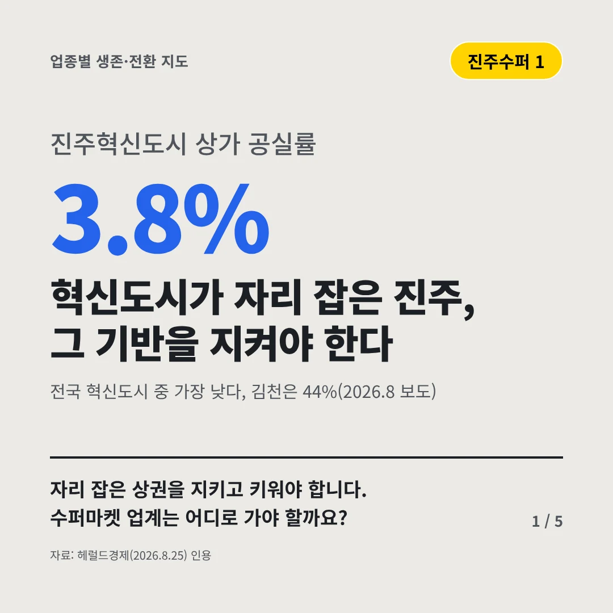
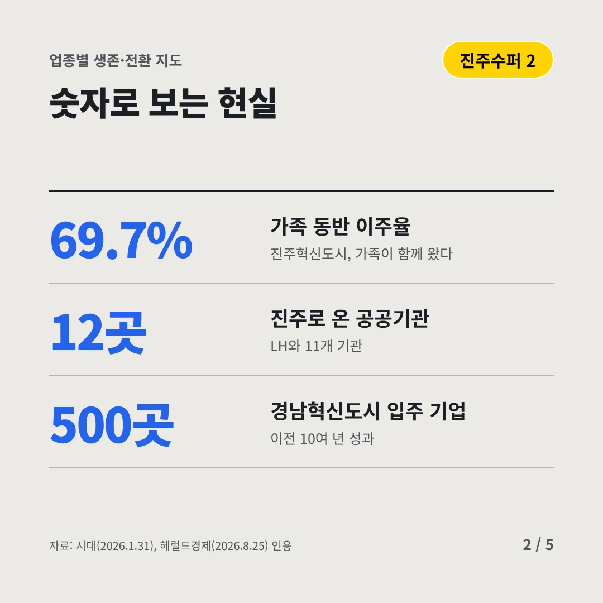
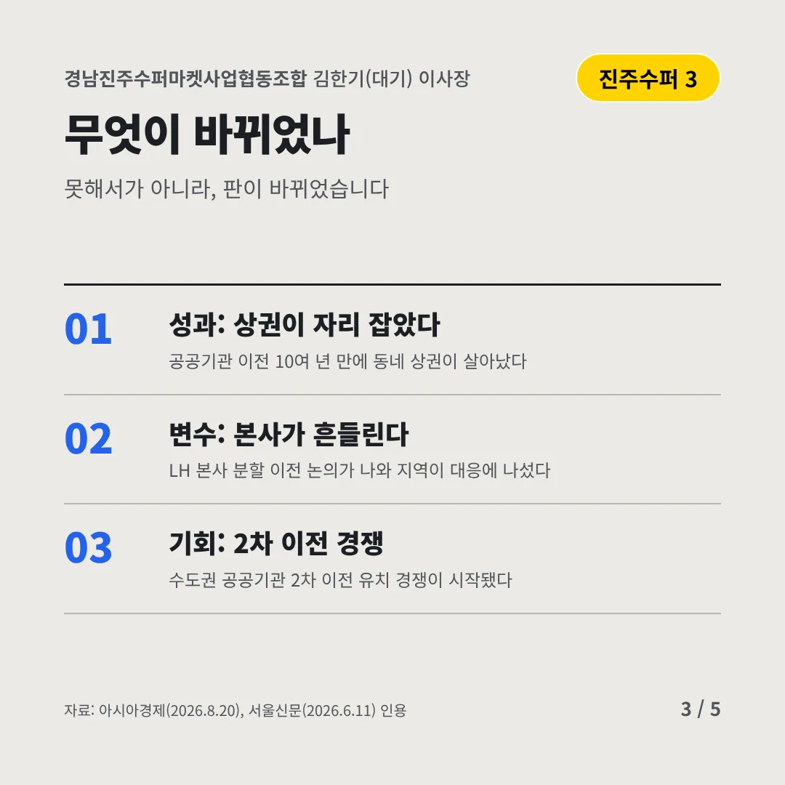
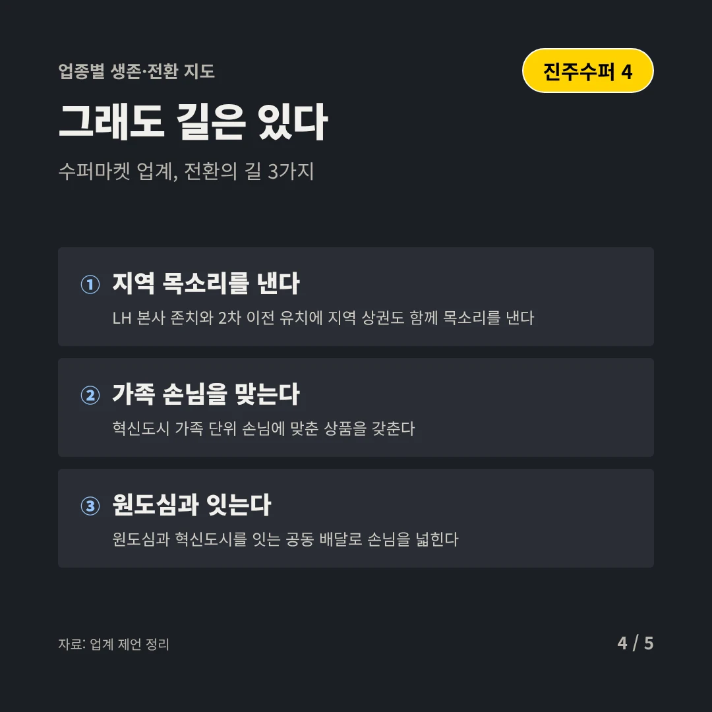
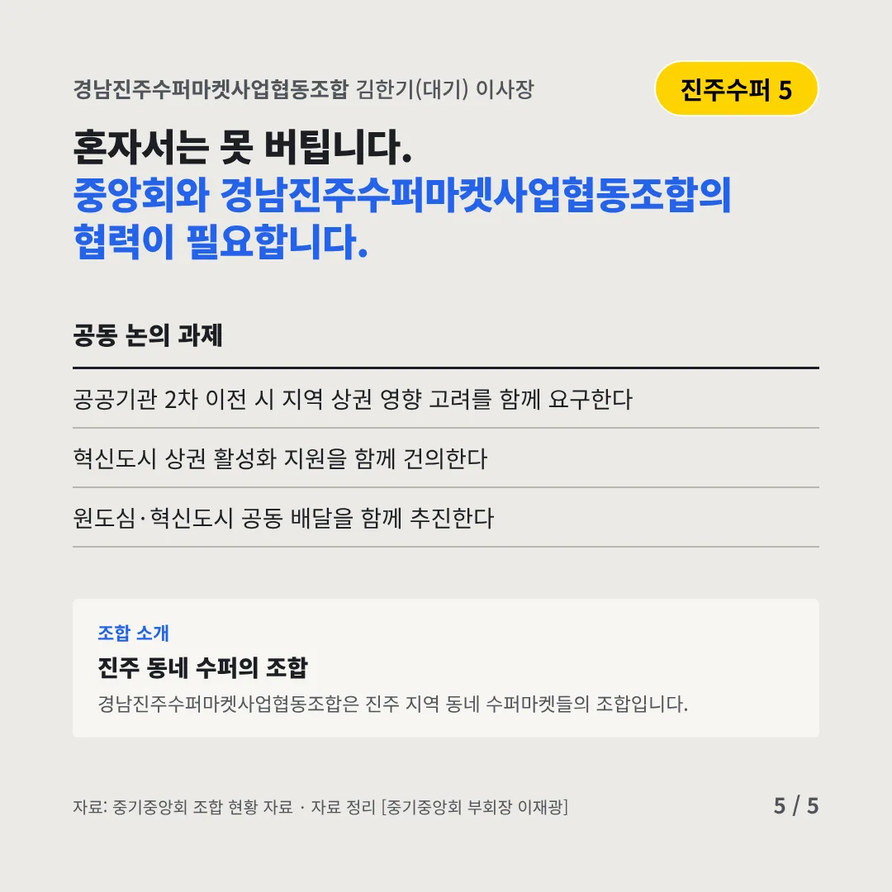
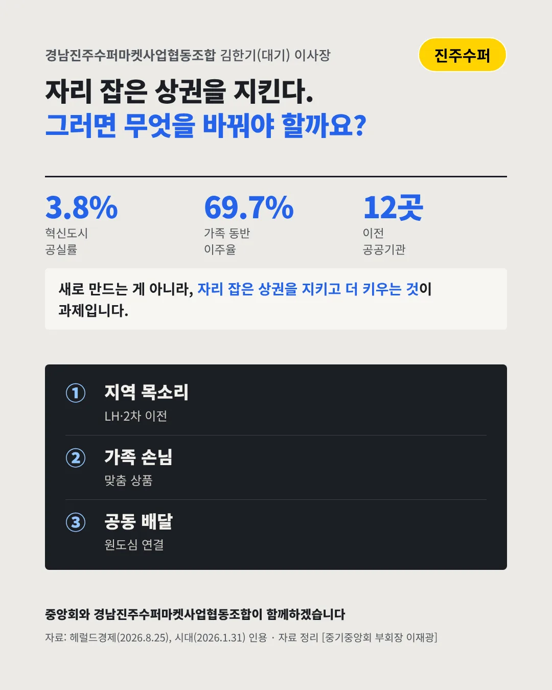

경남진주수퍼마켓사업협동조합
혁신도시가 자리 잡은 진주, 그 기반을 지켜야 한다
3.8% 진주혁신도시 상가 공실률






자리 잡은 상권을 지키고 키워야 합니다. 수퍼마켓 업계는 어디로 가야 할까요?
숫자로 보는 현실
- 69.7%가족 동반 이주율진주혁신도시, 가족이 함께 왔다
- 12곳진주로 온 공공기관LH와 11개 기관
- 500곳경남혁신도시 입주 기업이전 10여 년 성과
무엇이 바뀌었나
- 성과: 상권이 자리 잡았다공공기관 이전 10여 년 만에 동네 상권이 살아났다
- 변수: 본사가 흔들린다LH 본사 분할 이전 논의가 나와 지역이 대응에 나섰다
- 기회: 2차 이전 경쟁수도권 공공기관 2차 이전 유치 경쟁이 시작됐다
그래도 길은 있다
- 지역 목소리를 낸다LH 본사 존치와 2차 이전 유치에 지역 상권도 함께 목소리를 낸다
- 가족 손님을 맞는다혁신도시 가족 단위 손님에 맞춘 상품을 갖춘다
- 원도심과 잇는다원도심과 혁신도시를 잇는 공동 배달로 손님을 넓힌다
한 장 요약

조합 소개
경남진주수퍼마켓사업협동조합은 진주 지역 동네 수퍼마켓들의 조합입니다.
자료: 헤럴드경제(2026.8.25), 시대(2026.1.31), 아시아경제(2026.8.20), 서울신문(2026.6.11)